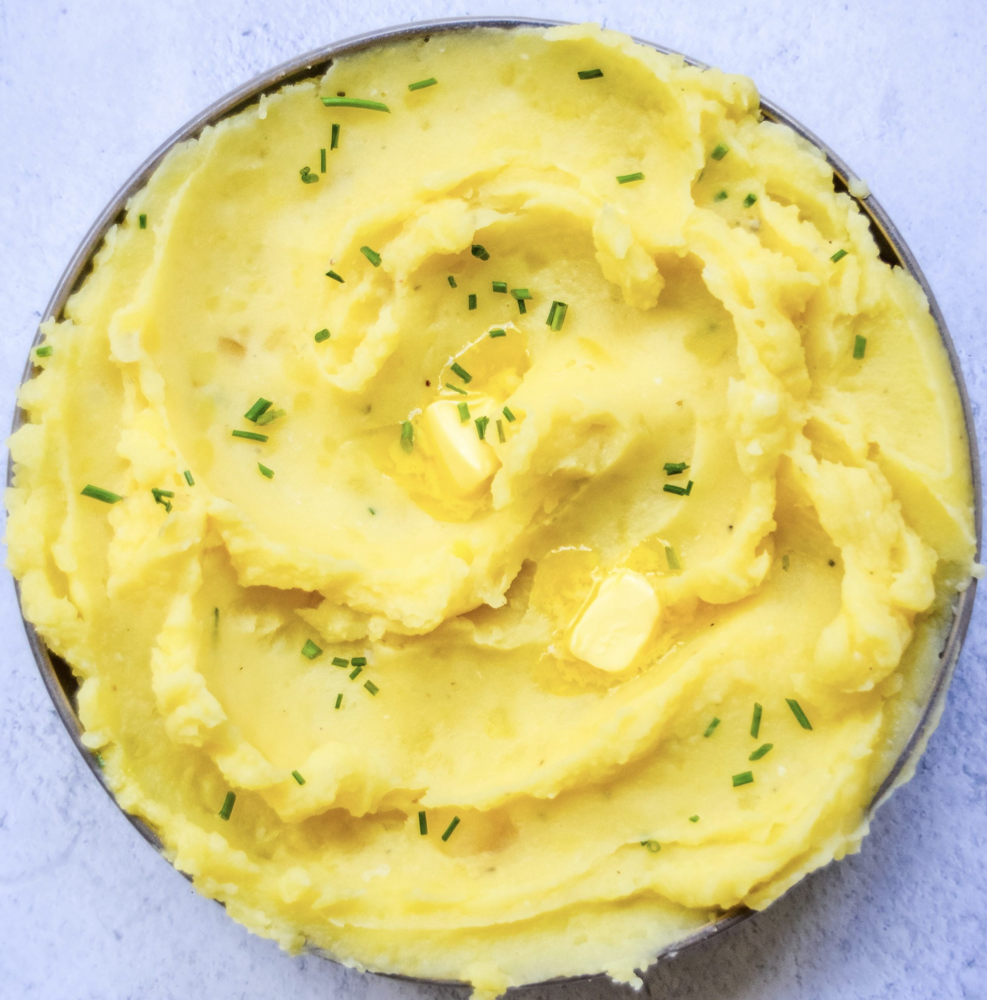

garlicky mashed potatoes (the lengthy way)
ingredients
- yukon gold potatoes
- garlic
- salt and pepper
- heavy whipping cream
- butter

instructions
- im not gonna tell you how to make 'em, just add some oil to the garlic, wrap in foil and incorporate that into YOUR mashed potatoes. bye.